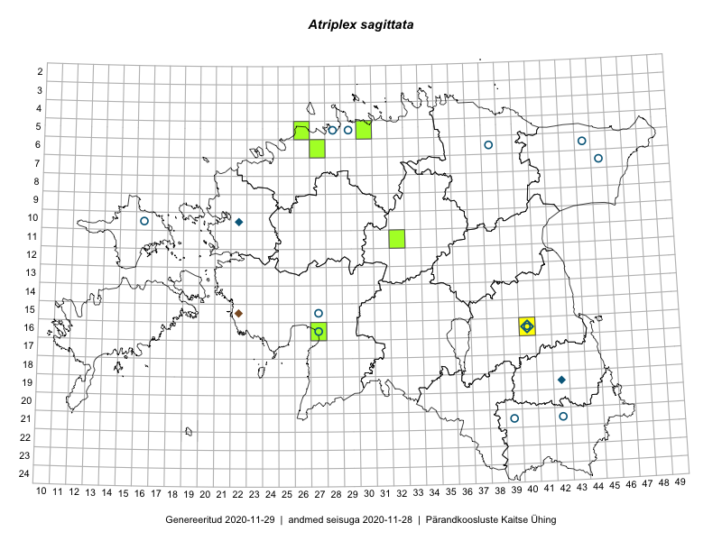

Atriplex sagittata — läikmalts
Amaranthaceae :: Atriplex nitens Schkuhr (39); Atriplex sagittata Borkh. (7)

Kaart põhineb 46 kirjel:
vaatlusi 1
herbaareksemplare 45
Taime kaasaegsed ja ajaloolised leiukohad asuvad 8 ruudus.
Tingmärgid ja ruutude arvud periooditi (U1 / V2 )
█ 2006–2020 (2/–)
◆/◇ 1971–2005 (2/1)
○ 1921–1970 (6/10)
+ kuni 1920 (0/0)
× hävinud (–/0)
? kaheldav (–/0)
| Ruut | Leidja(d) | Leiuaeg | Kirje |
|---|---|---|---|
| 11-32 | Indrek Tammekänd | 2019-09-22 | ruut/ala: Atriplex sagittata Borkh. |
| 16-40 | Visolde Puusepp | 1968-08-09 | TAA0070285: Atriplex nitens Schkuhr |
| 16-40 | Visolde Puusepp | 1968-08-09 | TAA0070286: Atriplex nitens Schkuhr |
| 16-40 | A. Remmel | 1960-10-10 | TU300404: Atriplex nitens Schkuhr |
| 16-40 | A. Remmel | 1960-07-30 | TU300405: Atriplex nitens Schkuhr |
| 15-27 | A. Remmel | 1959-08-22 | TU300406: Atriplex nitens Schkuhr |
| 21-39 | L. Pihlapuu | 1963-07-17 | TU300408: Atriplex nitens Schkuhr |
| 05-28 | A. Remmel | 1965-10-07 | TU300414: Atriplex nitens Schkuhr |
| 16-40 | A. Remmel | 1967-08-14 | TU300415: Atriplex nitens Schkuhr |
| 16-40 | A. Remmel | 1960-10-13 | TU300417: Atriplex nitens Schkuhr |
| 16-40 | A. Remmel | 1964-07-21 | TU300418: Atriplex nitens Schkuhr |
| 16-40 | A. Remmel | 1962-09-14 | TU300419: Atriplex nitens Schkuhr |
| 16-40 | A. Remmel | 1966-10-10 | TU300420: Atriplex nitens Schkuhr |
| 16-40 | A. Remmel | 1954-09-06 | TU300421: Atriplex nitens Schkuhr |
| 05-28 | A. Remmel | 1967-10-09 | TU300422: Atriplex nitens Schkuhr |
| 16-27 | A. Remmel | 1962-07-27 | TU300423: Atriplex nitens Schkuhr |
| 16-27 | A. Remmel | 1957-08-09 | TU300424: Atriplex nitens Schkuhr |
| 16-40 | A. Remmel | 1962-09-14 | TU300426: Atriplex nitens Schkuhr |
| 16-40 | A. Remmel | 1962-09-14 | TU300427: Atriplex nitens Schkuhr |
| 16-27 | A. Remmel | 1960-08-09 | TU300428: Atriplex nitens Schkuhr |
| 16-27 | A. Remmel | 1960-08-09 | TU300429: Atriplex nitens Schkuhr |
| 06-38 | A. Remmel | 1958-08-05 | TU300431: Atriplex nitens Schkuhr |
| 16-40 | A. Remmel | 1954-08-28 | TU300432: Atriplex nitens Schkuhr |
| 16-40 | A. Remmel | 1969-08-29 | TU300433: Atriplex nitens Schkuhr |
| 16-40 | A. Remmel | 1960-10-13 | TU300434: Atriplex nitens Schkuhr |
| 16-40 | A. Remmel | 1955-07-26 | TU300435: Atriplex nitens Schkuhr |
| 16-40 | A. Remmel | 1959-08-08 | TU300437: Atriplex nitens Schkuhr |
| 05-28 | A. Remmel | 1969-10-21 | TU300438: Atriplex nitens Schkuhr |
| 16-40 | A. Remmel | 1959-08-08 | TU300439: Atriplex nitens Schkuhr |
| 15-27 | A. Remmel | 1959-08-22 | TU300440: Atriplex nitens Schkuhr |
| 15-27 | A. Remmel | 1959-08-22 | TU300441: Atriplex nitens Schkuhr |
| 15-27 | A. Remmel | 1959-08-22 | TU300442: Atriplex nitens Schkuhr |
| 16-40 | A. Kõiveer | 1998-09-22 | TU300443: Atriplex nitens Schkuhr |
| 16-40 | A. Kõiveer | 1998-09-22 | TU300444: Atriplex nitens Schkuhr |
| 16-40 | A. Kõiveer | 1998-09-22 | TU300445: Atriplex nitens Schkuhr |
| 16-40 | A. Kõiveer | 1998-09-22 | TU300446: Atriplex nitens Schkuhr |
| 06-38 | A. Remmel | 1958-08-05 | TU272671: Atriplex sagittata Borkh. |
| 16-40 | A. Remmel | 1959-08-08 | TU272672: Atriplex nitens Schkuhr |
| 16-40 | A. Remmel | 1959-08-08 | TU272673: Atriplex sagittata Borkh. |
| 15-27 | A. Remmel | 1959-08-22 | TU272674: Atriplex sagittata Borkh. |
| 10-22 | Tõnu Ploompuu | 1990-10-19 | TALL C004050: Atriplex sagittata Borkh. |
| 16-27 | Indrek Tammekänd | 2018-09-24 | TAA0147627: Atriplex sagittata Borkh. |
| 16-27 | Indrek Tammekänd | 2018-08-26 | TAA0147657: Atriplex nitens Schkuhr |
| 16-27 | Indrek Tammekänd | 2018-07-12 | TAA0147771: Atriplex sagittata Borkh. |
| 11-32 | Indrek Tammekänd | 2019-09-22 | TAA0151819: Atriplex nitens Schkuhr |
| 11-32 | Indrek Tammekänd | 2019-09-22 | TAA0151837: Atriplex nitens Schkuhr |
Ruutude arv uue atlase andmekogu järgi. Muuhulgas arvestab vanemat herbaariumi, 2005. aasta atlase välitöölehtedelt uuesti digitaliseeritud andmeid jne. Uue atlase andmekogust pärinevad andmed on kaardile kantud siniste sümbolitega.↩︎
Ruutude arv 2005. aasta atlase (Kukk, T., Kull, T., Eesti taimede levikuatlas. Eesti Maaülikool, Põllumajandus- ja Keskkonnainstituut, Tartu, 2005) järgi. Andmeallikana on kasutatud levik.exe programmi, kus igas ruudus on registreeritud vaid uusim leid. Seetõttu on vanemate perioodide kohta andmed puudulikud. Kasutatud levik.exe andmestikus leidub mõningaid kõrvalekaldeid atlase trükis ilmunud versioonist, sagedamini tarnade ja käpaliste seas. Lisaks leidub selles andmestikus valik liike (peamiselt väheste leidudega tulnuktaimed), mille kaarte trükis ei avaldatud. Vana atlase andmed ruutudest, milles ei ole uue atlase andmekogus leide enne 2006. aastat, on kaardil esitatud punaste sümbolitega. Vana atlase andmetel hävinud ja kaheldavaid leiukohti pole hilisemate (taas)leidude põhjal korrigeeritud.↩︎